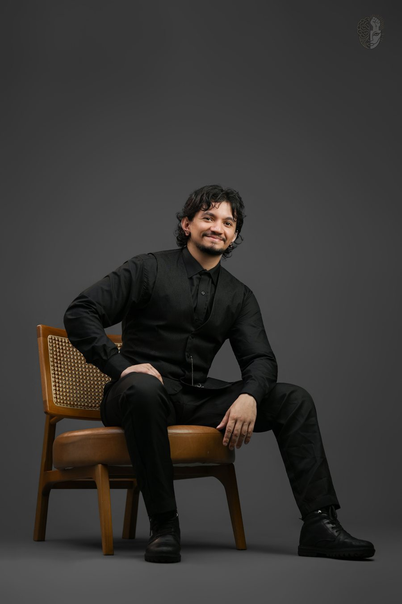

David F. Santos
Atendimento Psicológico Online e Presencial em Santa Maria, RS.
Um espaço para compreender sua história e construir novas possibilidades
Sobre mim
Formação e trajetória
Sou David F. Santos, psicólogo (CRP 07/40292), mestrando em Psicologia pela UFSM, especialista em Psicologia Social e Arteterapia e em processo de especialização em Clínica pela perspectiva Histórico-Cultural junto ao Instituto Lev.
Minha trajetória reúne clínica, pesquisa, educação e arte. Essas experiências orientam um trabalho atento à história de cada pessoa e, ao mesmo tempo, às relações, à cultura e às condições de vida que participam dessa história.
Atuação profissional
Atuo com psicoterapia individual online e presencial em Santa Maria, RS, para adolescentes e adultos.
Também realizo avaliação psicológica e neuropsicológica e orientação vocacional e de carreira. A modalidade e os recursos de cada serviço são definidos conforme a demanda e o que for tecnicamente adequado.
Meu compromisso
Procuro oferecer uma relação profissional acolhedora, ativa e responsável. Isso significa escutar com cuidado, formular perguntas, construir compreensões junto com você e reconhecer os limites do que a psicologia pode oferecer em cada situação.
O cuidado psicológico, para mim, precisa respeitar a história, o tempo e as possibilidades reais da pessoa, sem respostas prontas, julgamentos morais ou promessas de mudança rápida.
Conheça meu Currículo LattesComo compreendo a clínica
Meu trabalho parte da ideia de que cada pessoa é formada por sua história, suas relações e pelas condições em que vive. Isso não diminui o que existe de único em você. Pelo contrário: ajuda a entender como algumas formas de sentir, pensar e agir surgiram — e como elas podem mudar.
Uma escuta que considera história e contexto
Na psicoterapia, buscamos compreender como uma dificuldade começou, quando ela se torna mais forte e como afeta sua vida hoje. Também olhamos para suas capacidades, relações, apoios e possibilidades. Família, estudos, trabalho, cultura e condições de vida entram na conversa quando ajudam a entender o que você está vivendo.
Uma relação construída em diálogo
Meu trabalho não é apenas ouvir em silêncio nem dizer o que você deve fazer. A psicoterapia acontece por meio de conversas, perguntas, reflexões e atividades escolhidas de acordo com sua história e suas necessidades. Participo de forma ativa, respeitando suas escolhas. Os objetivos são definidos em conjunto e podem mudar ao longo do processo.
Compreensão, mudança e autonomia
A psicoterapia pode ajudar você a compreender melhor sua história, lidar de outras formas com as dificuldades e fazer escolhas com mais clareza. Ter autonomia não significa enfrentar tudo sozinho, mas reconhecer suas necessidades, buscar apoio e construir caminhos possíveis. Cada pessoa tem seu próprio ritmo, e não existem resultados prontos ou garantidos.
Tipos de atendimentos
Psicoterapia individual online e presencial
Adolescentes e adultosAcompanhamento para adolescentes e adultos em questões emocionais, relacionais, autoestima, ansiedade, mudanças e desenvolvimento pessoal.
Falar sobre psicoterapiaAvaliação psicológica e neuropsicológica
Processo técnico e ético para investigar aspectos cognitivos, emocionais, comportamentais e funcionais, com entrevistas, instrumentos, observação clínica e devolutiva. A modalidade é definida conforme a indicação técnica.
Falar sobre avaliaçãoOrientação vocacional e de carreira
Apoio para escolhas profissionais, planejamento ou transição de carreira, integrando escuta psicológica, reflexão sobre interesses e habilidades e, quando indicado, instrumentos psicológicos.
Falar sobre orientaçãoQuando o atendimento psicológico pode fazer sentido?
- Quando sentimentos, conflitos ou situações começam a ocupar um espaço difícil de sustentar sozinho;
- Quando certas formas de agir ou se relacionar se repetem e você deseja compreendê-las melhor;
- Em períodos de mudança, decisão, ruptura, sobrecarga ou reorganização da vida cotidiana;
- Quando você busca um espaço de escuta e reflexão que considere sua história e suas condições de vida;
- Quando existe uma questão específica que demanda avaliação psicológica, neuropsicológica ou orientação vocacional.
Você não precisa chegar com uma explicação pronta. No contato inicial, podemos conversar sobre o atendimento e o serviço mais adequado à sua situação.
Este site tem caráter informativo e não substitui uma avaliação psicológica individualizada.
Como começar?
- Entre em contato pelo WhatsApp ou pelo formulário desta página.
- Informe apenas o necessário: o serviço que procura e sua disponibilidade de horários.
- Eu retorno para esclarecer dúvidas iniciais e verificar possibilidades de atendimento.
- Se houver disponibilidade e o serviço for adequado à sua demanda, combinamos a primeira sessão, online ou presencial em Santa Maria, RS.
Vamos conversar sobre a possibilidade de atendimento?
Você não precisa contar toda a sua história na primeira mensagem. Informe o serviço que procura e, se desejar, uma breve razão para o contato. A partir disso, verificamos disponibilidade, modalidade e os próximos passos.
Este site, o formulário e o WhatsApp não oferecem atendimento imediato. Em risco à vida ou à integridade, ligue para o SAMU (192) ou procure uma UPA ou pronto-socorro. Para apoio emocional, o CVV atende pelo 188.

Perguntas frequentes
O atendimento é online ou presencial?
O atendimento pode ocorrer de forma online ou presencial em Santa Maria, RS, conforme a modalidade combinada e a indicação técnica.
Quanto tempo dura uma sessão e o acompanhamento?
Uma sessão dura, em média, 50 minutos. A frequência e a continuidade do acompanhamento são combinadas conforme a demanda, os objetivos e a indicação profissional, podendo ser revistas ao longo do processo.
O primeiro contato já é uma sessão?
Não. A mensagem inicial serve para verificar o serviço procurado, disponibilidade e informações administrativas. A primeira sessão é um encontro profissional agendado, no qual podemos conversar com mais cuidado sobre a demanda, suas dúvidas e os objetivos iniciais.
Como é sua participação durante a psicoterapia?
Minha postura é ativa e baseada no diálogo. Além de escutar, faço perguntas, compartilho compreensões, retomo elementos da sua história e proponho recursos quando eles podem contribuir para o processo. Não ofereço respostas prontas nem decido pela pessoa atendida.
O atendimento é sigiloso?
A atuação é orientada pelo dever de sigilo profissional. Em situações excepcionais previstas em lei ou avaliadas conforme o Código de Ética, eventual compartilhamento deve se limitar ao necessário, buscando o menor prejuízo. Esses limites são explicados no início do atendimento.
Preciso ter um diagnóstico para iniciar psicoterapia?
Não. É possível compreender e cuidar de uma dificuldade sem começar por uma classificação diagnóstica. Quando uma investigação diagnóstica for pertinente, ela será conversada com cuidado, considerando história, contexto, funcionamento atual e outras hipóteses — sem reduzir a pessoa a um nome.
Psicólogo prescreve medicação?
Não. A prescrição de medicamentos é uma atribuição médica. Quando uma avaliação de saúde ou o trabalho conjunto com outro profissional puder contribuir, essa possibilidade pode ser discutida e encaminhada de forma responsável.